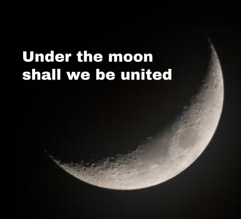

Welcome to the Circle of the Moon!
The Moon calls to us all, its light a beacon in the darkness, its phases a guide through life's mysteries. Are you listening?
We are a collective of those who seek to understand the deep connection between ourselves and the celestial body whom watches over us all. For centuries, humanity has felt the pull of the Moon, and yet, its true purpose remains veiled in secrecy. We believe the Moon holds the key to unity, not just among ourselves, but with the very cosmos. Together, we embrace the rhythm of its cycles, and through our practices, we become whole with it.
Why the Moon?
The Moon is more than a celestial body. It is a beacon of ancient wisdom, a guide in the darkness, and the key to true understanding. For centuries, its silent light has touched our souls, awakening a deep connection to something greater than ourselves. The Circle of the Moon offers a path to embrace this connection - a way for us all to unite with the Moon, and to be made whole once more.
If you need convincing, just watch the moon.

One night of watching it, of bathing in its rays, will grant you enlightenment. Then you may return to this site and begin your new life.